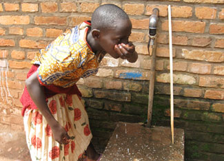

As land and water become scarce, competition for these vital resources intensifies within societies, particularly between the wealthy and those who are poor and dispossessed. The shrinkage of life-supporting resources per person that comes with population growth is threatening to drop the living standards of millions of people below the survival level, leading to potentially unmanageable social tensions.
Access to land is a prime source of social tension. Expanding world population has cut the grainland per person in half, from 0.23 hectares in 1950 to 0.10 hectares in 2007. One tenth of a hectare is half of a building lot in an affluent U.S. suburb. This ongoing shrinkage of grainland per person makes it difficult for the world’s farmers to feed the 70 million people added to the world population each year. The shrinkage in cropland per person not only threatens livelihoods. In largely subsistence societies, it threatens survival itself. Tensions within communities begin to build as landholdings shrink below the number needed for survival.
The Sahelian zone of Africa, with one of the world’s fastest-growing populations, is an area of spreading conflict. In troubled Sudan, 2 million people have died and more than 4 million have been displaced in the long-standing conflict of more than 20 years between the Muslim north and the Christian south. The more recent conflict in the Darfur region in western Sudan that began in 2003 illustrates the mounting tensions between two Muslim groups: camel herders and subsistence farmers. Government troops are backing Arab militias, which are engaging in the wholesale slaughter of black Sudanese in an effort to drive them off their land, sending them into refugee camps in neighboring Chad. At least some 200,000 people have been killed in the conflict, and another 250,000 have died of hunger and disease in the refugee camps.
The story of Darfur is that of the Sahel, the semiarid region of grassland and dryland farming that stretches across Africa from Senegal in the west to Somalia in the east. In the northern Sahel, grassland is turning to desert, forcing herders southward into the farming areas. Declining rainfall and overgrazing are combining to destroy the grasslands.
Well before the rainfall decline, the seeds for the conflict were being sown as Sudan’s population climbed from 9 million in 1950 to 39 million in 2007, more than a fourfold rise. Meanwhile, the cattle population increased from less than 7 million to 40 million, an increase of nearly sixfold. The number of sheep and goats together increased from less than 14 million to 113 million, an eightfold increase. No grasslands can survive such rapid continuous growth in livestock populations.
In Nigeria, where 148 million people are crammed into an area not much larger than Texas, overgrazing and overplowing are converting grassland and cropland into desert, putting farmers and herders in a war for survival. Unfortunately, the division between herders and farmers is also often the division between Muslims and Christians. The competition for land - amplified by religious differences and combined with a large number of frustrated young men with guns - has created a volatile and violent situation in which finally, in mid-2004, the government imposed emergency rule.
Rwanda has become a classic case study in how mounting population pressure can translate into political tension, conflict, and social tragedy. James Gasana, who was Rwanda’s minister of agriculture and environment from 1990 to 1992, warned in 1990 that, without “profound transformations in its agriculture, [Rwanda] will not be capable of feeding adequately its population under the present growth rate.” Although the country’s demographers projected major future gains in population, Gasana said he did not see how Rwanda would reach 10 million inhabitants without social disorder, “unless important progress in agriculture, as well as other sectors of the economy, was achieved.”
In 1950, Rwanda’s population was 2.4 million. By 1993, it had tripled to 7.5 million, making it the most densely populated country in Africa. As population grew, so did the demand for firewood. By 1991, the demand was more than double the sustainable yield of local forests. As trees disappeared, straw and other crop residues were used for cooking fuel. With less organic matter in the soil, land fertility declined.
As the health of the land deteriorated, so did that of the people dependent on it. Eventually, there was simply not enough food to go around. A quiet desperation developed. Like a drought-afflicted countryside, it could be ignited with a single match. That ignition came with the crash of a plane on April 6, 1994, shot down as it approached the capital Kigali, killing President Juvenal Habyarimana. The crash unleashed an organized attack by Hutus, leading to an estimated 800,000 deaths of Tutsis and moderate Hutus within 100 days.
Many other African countries, largely rural in nature, are on a demographic track similar to Rwanda’s. Tanzania’s population of 40 million in 2007 is projected to increase to 85 million by 2050. In the Democratic Republic of the Congo, the population is projected to triple from 63 million to 187 million.
Africa is not alone. In India, tension between Hindus and Muslims is never far below the surface. As each successive generation further subdivides already small plots, pressure on the land is intense. The pressure on water resources is even greater. With India’s population projected to grow from 1.2 billion in 2007 to 1.7 billion in 2050, a collision between rising human numbers and shrinking water supplies seems inevitable. The risk is that India could face social conflicts that would dwarf those in Rwanda. The relationship between population and natural systems is a national security issue, one that can spawn conflicts along geographic, tribal, ethnic or religious lines.
Disagreements over the allocation of water among countries that share river systems is a common source of international political conflict, especially where populations are outgrowing the flow of the river. Nowhere is this potential conflict more stark than among Egypt, Sudan and Ethiopia in the Nile River valley. Agriculture in Egypt, where it rarely rains, is wholly dependent on water from the Nile. Egypt now gets the lion’s share of the Nile’s water, but its population of 75 million is projected to reach 121 million by 2050, thus greatly expanding the demand for grain and water. Sudan, whose 39 million people also depend heavily on food produced with Nile water, is expected to have 73 million by 2050. And the number of Ethiopians - in the country that controls 85 percent of the river’s headwaters - is projected to expand from 83 million to 183 million.
Since there is already little water left in the Nile when it reaches the Mediterranean, if either Sudan or Ethiopia takes more water, then Egypt will get less, making it increasingly difficult to feed an additional 46 million people. Although there is an existing water rights agreement among the three countries, Ethiopia receives only a minuscule share of water. Given its aspirations for a better life - and with the Nile being one of its few natural resources - Ethiopia will undoubtedly want to take more.
In the Aral Sea basin in Central Asia, there is an uneasy arrangement among five countries over the sharing of the two rivers, the Amu Darya and the Syr Darya, which drain into the sea. The demand for water in Kazakhstan, Kyrgyzstan, Tajikistan, Turkmenistan, and Uzbekistan already exceeds the flow of the two rivers by 25 percent. Turkmenistan, which is upstream on the Amu Darya, is planning to develop another half-million hectares of irrigated agriculture. Racked by insurgencies, the region lacks the cooperation needed to manage its scarce water resources. Geographer Sarah O’Hara of the University of Nottingham, who studies the region’s water problems, says, “We talk about the developing world and the developed world, but this is the deteriorating world.”
|
 JON GOS/FLICKR A girl gets a drink of water in Rwanda, where mounting population has limited the resources necessary to sustain life, and has thus caused deadly social conflict. |
|
|